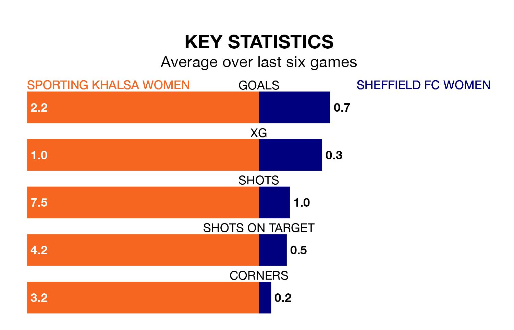

Relegation candidates Sheffield FC Women face a challenge away against high-flying Sporting Khalsa Women on Sunday.
Sheffield FC Women are 11th in the Women's National League Division One – Midlands table, and have picked up just one win and four draws in their 15 games to date.
Sporting, meanwhile, are second in the standings with 38 points, having won 12 and drawn two of their first 17 matches, and are three points behind table-toppers Loughborough Lightning Women.
With 61 goals in 17 games so far this season, Sporting are the league's highest scorers with 3.6 goals per game. And they are conceding fewer than average, letting in 21 goals at a rate of 1.2 per game.
Sheffield FC, meanwhile, are below average scorers, with 0.6 goals per game, compared to a league average of 1.8. They have conceded 1.9 goals per game.
The hosts are in good form in the Women's National League Division One Midlands, with four wins and a draw from their last six games.
With a win and a draw over that period, the away side's form is much worse – they have taken four points from 18, compared to Sporting's 13.
Over the last two years, Sporting and Sheffield FC have played each other twice. Sporting won both of them.
Their last meeting was on March 19, when Sporting won 3-0 at home.
Sporting's last match was on Wednesday, a 3-2 win against Sutton Coldfield Town Women.
Sheffield FC lost 2-1 against Lincoln City LFC last time out, on Thursday.
Updated: 15:10 (UTC), 15/03/24